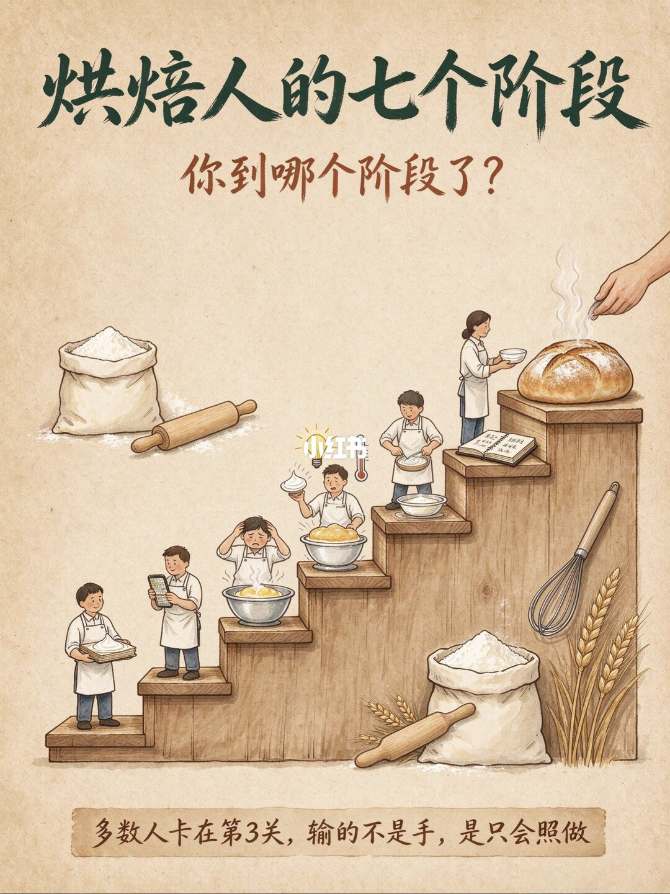
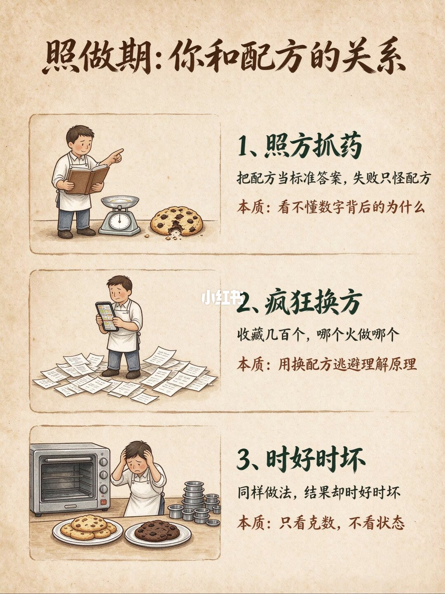
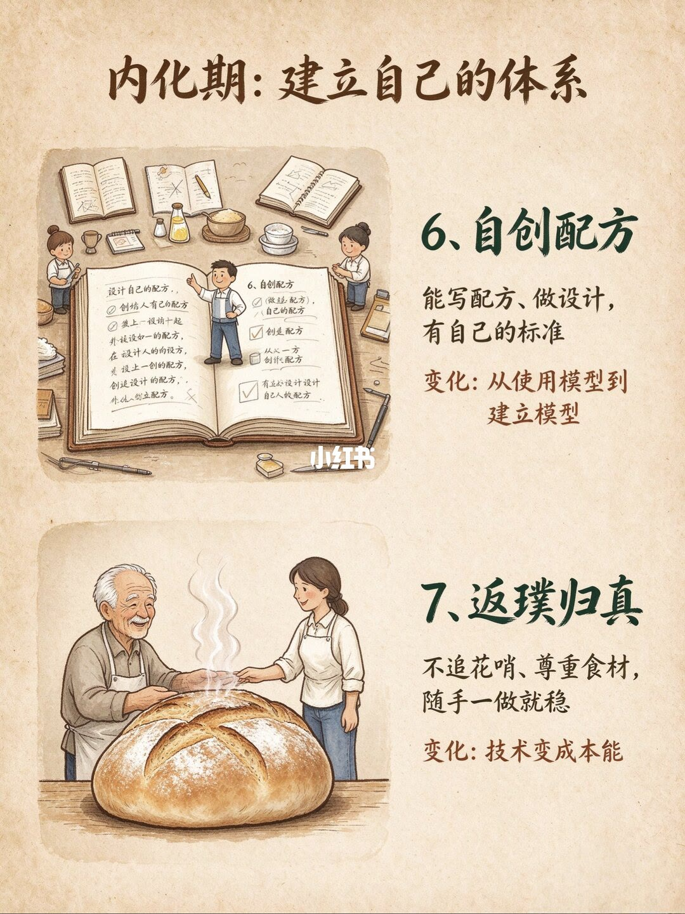
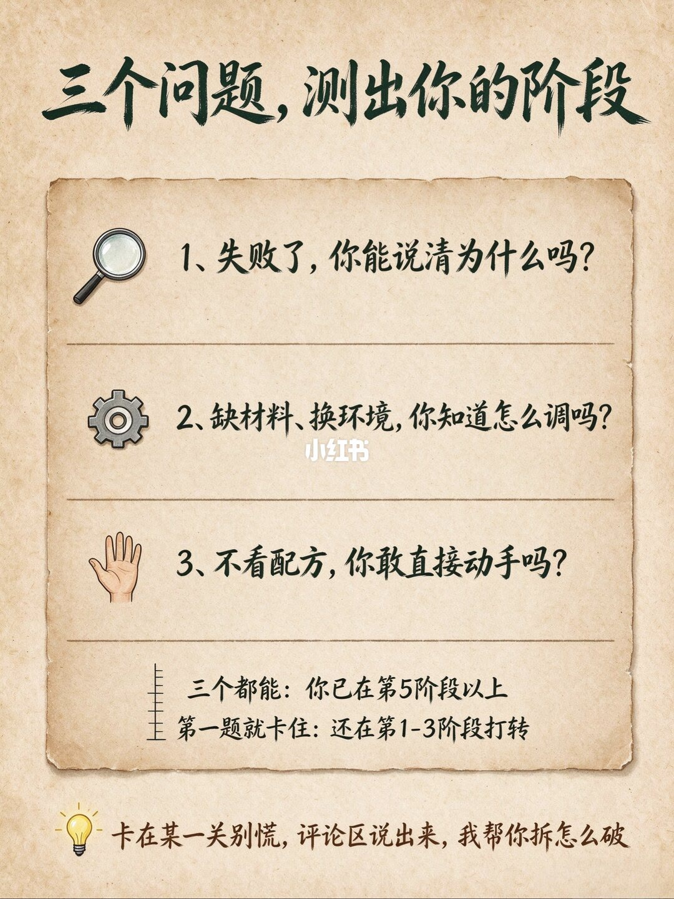
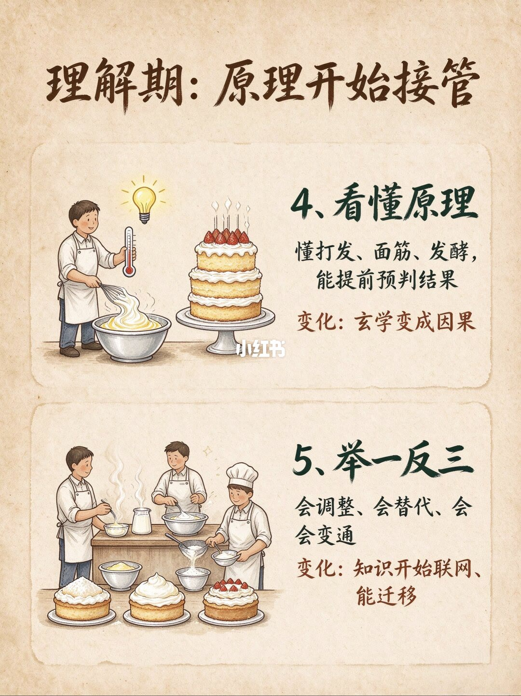

图文实录 · 小红书 · 小旭的烘焙日记
烘焙人的七个阶段，你到哪个阶段了？
七段分成照做、理解和内化。多数人被说卡在第 3 段：失败只会怪配方，看克数不看状态。页序把第 6、7 段放在第 4、5 段前面。
1/5
楼梯和一句判断
标题「烘焙人的七个阶段」，问「你到哪个阶段了」。台阶从下往上是端着面团、看手机、抱头对着一盆、头顶灯泡旁边有温度计、在打发、端着碗走向配方本、最后是一条出炉的面包。页底写：多数人卡在第 3 关，输的不是手，是只会照做。台阶上没有印出 1 到 7 的名字。

2/5
照做期：和配方的关系
1、照方抓药：把配方当标准答案，失败只怪配方。本质是看不懂数字背后的为什么。2、疯狂换方：收藏几百个，哪个火做哪个。本质是用换配方逃避原理。3、时好时坏：同样做法，结果却时好时坏。本质是只看克数，不看状态。图上左边是成功的饼干，右边是烤糊的。

3/5
内化期先出现
标题「内化期：建立自己的体系」。6、自创配方：能写配方、做设计，有自己的标准。变化是从使用模型到建立模型。7、返璞归真：不追花哨、尊重食材，随手一做就稳。变化是技术变成本能。这一页跳过了 4 和 5。

4/5
三个问题
1、失败了，你能说清为什么吗？2、缺材料、换环境，你知道怎么调吗？3、不看配方，你敢直接动手吗？三个都能：已在第 5 阶段以上。第一题就卡住：还在第 1–3 阶段。页底邀请到评论区说卡在哪一关。没有第 4 阶段的对应题。

5/5
理解期补在最后
标题「理解期：原理开始接管」。4、看懂原理：懂打发、面筋、发酵，能提前预判结果。变化是玄学变成因果。5、举一反三：会调整、会替代、会变通。变化是知识开始联网、能迁移。

汇总
按数字读，不要按页序读
1 到 3 在第 2 页：怪配方、换配方、只看克数。4 和 5 在第 5 页：看懂打发、面筋、发酵，然后能替换。6 和 7 在第 3 页：自己写标准，最后变成本能。第 4 页的测验只把「说不清失败」放回 1–3，把三题都能放在 5 以上，中间的第 4 段没有题。这是作者的阶段图，不是烘焙等级考试。